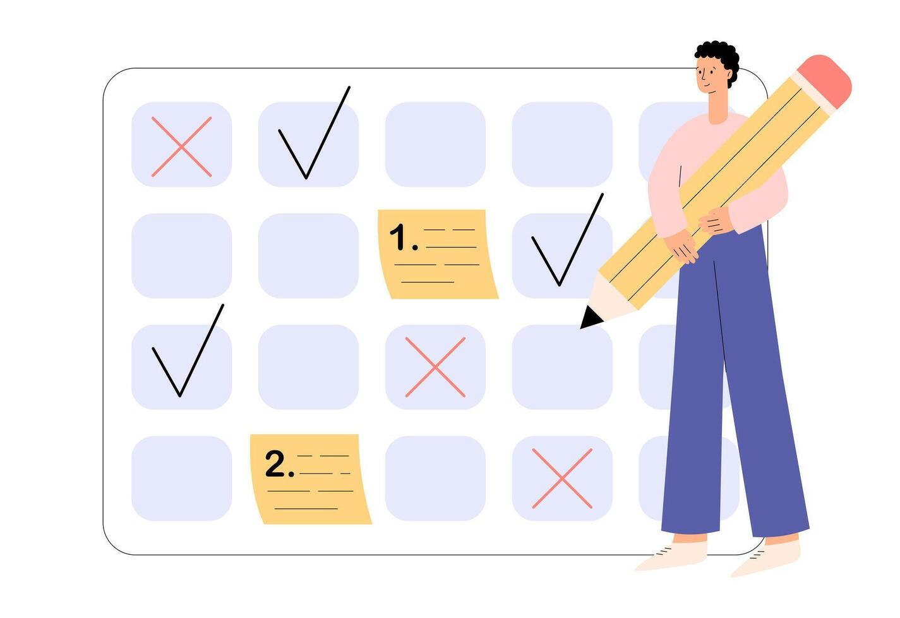
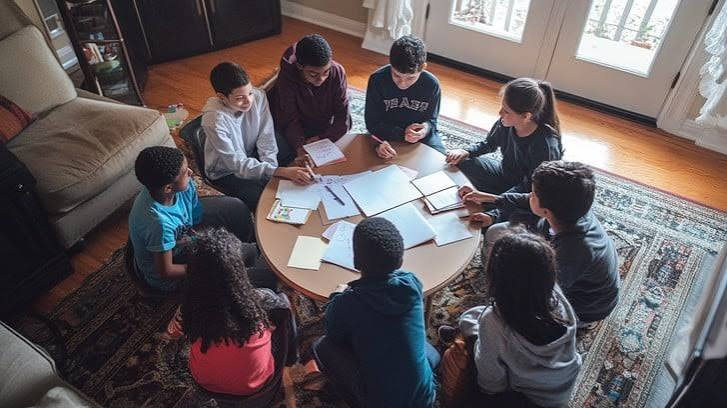

Managing Stress: Practical Tools for Student Wellbeing
If you have ever stared at a deadline at 11pm wondering how it crept up on you, you already know this topic. Stress is one of the biggest everyday barriers to good health and wellbeing (UN SDG 3) for university students, and it rarely gets talked about until it is already a problem. This page covers what stress actually is, where it tends to come from during term time, and a few simple, realistic ways to keep it in check.
What Is Stress?
Stress is just the body's natural response to pressure, like an exam deadline, a heavy workload, or a big life change. In small doses it can actually sharpen focus; that jolt of adrenaline before a presentation is not necessarily a bad thing. Left unmanaged for too long, though, it starts chipping away at sleep, concentration, mood, and physical health.
Short-term stress passes once the pressure lifts, such as the day before an exam. Chronic stress sticks around for weeks or months and is the version that actually needs active management.
Common Causes for Students
- Overlapping coursework and exam deadlines
- Financial pressure and part-time work commitments
- Moving away from home and adjusting to independent living
- Balancing social life, sleep, and study time
Most students will recognise at least two or three of these from their own week. Recognising which ones apply to you is genuinely the first step, because it is hard to manage a stressor you have not actually named.
Practical Coping Techniques
Breathing and Grounding
A slow, deliberate breathing pattern (in for 4 seconds, hold for 4, out for 4) can lower your heart rate within a couple of minutes. It costs nothing and works between lectures, before an exam, or during a busy commute.
Movement
Even a short walk between study sessions helps clear mental fatigue, and honestly, it is the technique I forget about most, even though it works every time. You do not need a gym membership; 15 to 20 minutes of walking outside is enough to notice a difference in mood and focus.
Time Management

Breaking a big deadline into smaller weekly tasks makes it feel achievable rather than overwhelming. Planning study sessions the same way you would plan a timetable reduces the last-minute panic that causes most exam stress.
Building a Support Network

Talking to a friend, coursemate, or your personal tutor about pressure you are under is not a last resort, it is just a normal, effective part of managing stress, even if it can feel awkward to bring up first. Universities also run free wellbeing and counselling services that are genuinely worth knowing about before you actually need them, not after.